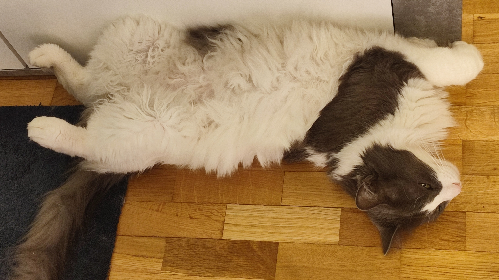

Mi Nombre: Aitor (Alias "El Tortillas)
Buenos dias
Me llamo Aitor, soy un gato normal que solo me dedico a comer y a dormir
mientas mis dueños salen a trabajar para mantenerme, una de mis aficiones es camuflarme
en modo planta pero mi color blanco vaca sieeeempre me delata, he intentado otras tecnicas pero nunca funcionan,
Hay una intrusa que desde hace un año la veo viniendo, la ves que me hizo volar como gimnasta ritmico fue la gota
que derramo el vaso, estoy Haaaaaaartooooo,
Gracias.
Guadalajara-España
aitor_elgato2015@gmail.com